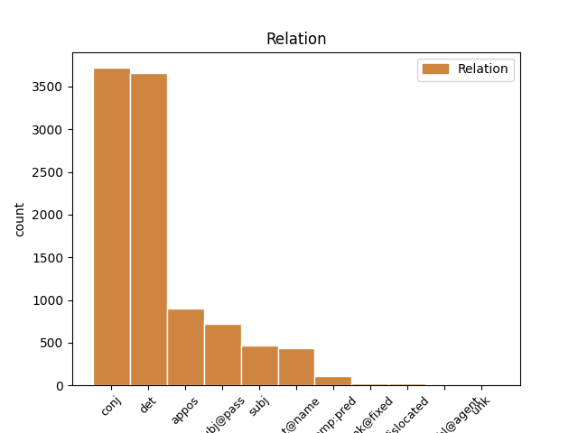
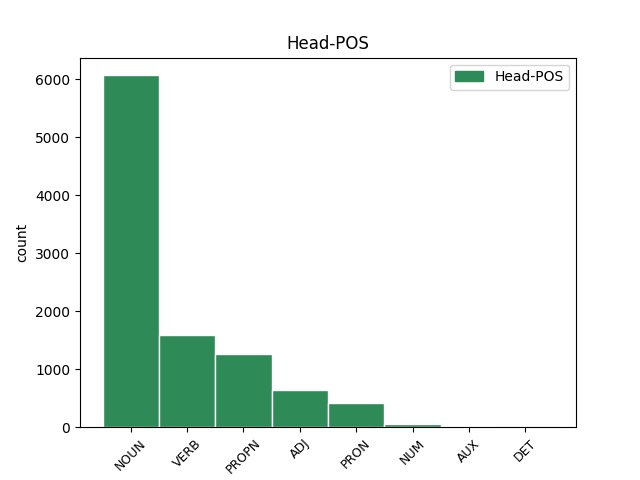
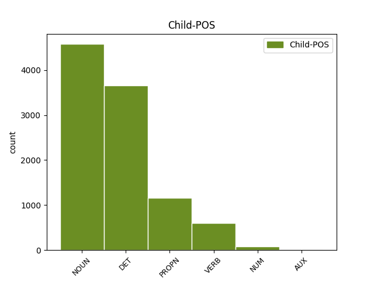

Distribution of features within this leaf



Agreement Rules sorted by frequency.
- When the dependent token is the determiner(det) of the head token, and the dependent token is DET.
1 Sed _ _ _ _ 0 _ _ _
2 ut _ _ _ _ 0 _ _ _
3 ad _ _ _ _ 0 _ _ _
4 urendum _ _ _ _ 0 _ _ _
5 et _ _ _ _ 0 _ _ _
6 secandum _ _ _ _ 0 _ _ _
7 sic _ _ _ _ 0 _ _ _
8 ad _ _ _ _ 0 _ _ _
9 hoc _ _ _ _ 0 _ _ _
10 genus _ _ _ _ 0 _ _ _
11 castigandi _ _ _ _ 0 _ _ _
12 raro _ _ _ _ 0 _ _ _
13 inviti _ _ _ _ 0 _ _ _
14 que _ _ _ _ 0 _ _ _
15 veniemus _ _ _ _ 0 _ _ _
16 ne _ _ _ _ 0 _ _ _
17 c _ _ _ _ 0 _ _ _
18 umquam _ _ _ _ 0 _ _ _
19 nisi _ _ _ _ 0 _ _ _
20 necessario _ _ _ _ 0 _ _ _
21 si _ _ _ _ 0 _ _ _
22 nulla _ _ _ _ 0 _ _ _
23 reperietur _ _ _ _ 0 _ _ _
24 alia alius DET Px Case=Nom|Gender=Fem|Number=Sing 25 det _ ref=1.136
25 medicina medicina NOUN Nb Case=Nom|Gender=Fem|Number=Sing 0 _ _ _
1 Obiurgationes _ _ _ _ 0 _ _ _
2 etiam _ _ _ _ 0 _ _ _
3 non _ _ _ _ 0 _ _ _
4 numquam _ _ _ _ 0 _ _ _
5 incidunt _ _ _ _ 0 _ _ _
6 necessariae _ _ _ _ 0 _ _ _
7 in _ _ _ _ 0 _ _ _
8 quibus _ _ _ _ 0 _ _ _
9 utendum _ _ _ _ 0 _ _ _
10 est _ _ _ _ 0 _ _ _
11 fortasse _ _ _ _ 0 _ _ _
12 et _ _ _ _ 0 _ _ _
13 vocis _ _ _ _ 0 _ _ _
14 contentione contentio NOUN Nb Case=Abl|Gender=Fem|Number=Sing 0 _ _ _
15 maiore _ _ _ _ 0 _ _ _
16 et _ _ _ _ 0 _ _ _
17 verborum _ _ _ _ 0 _ _ _
18 gravitate gravitas NOUN Nb Case=Abl|Gender=Fem|Number=Sing 14 conj _ ref=1.136
19 acriore _ _ _ _ 0 _ _ _
20 id _ _ _ _ 0 _ _ _
21 agendum _ _ _ _ 0 _ _ _
22 etiam _ _ _ _ 0 _ _ _
23 ut _ _ _ _ 0 _ _ _
24 ea _ _ _ _ 0 _ _ _
25 facere _ _ _ _ 0 _ _ _
26 videamur _ _ _ _ 0 _ _ _
27 irati _ _ _ _ 0 _ _ _
1 quibus _ _ _ _ 0 _ _ _
2 ille _ _ _ _ 0 _ _ _
3 respondit _ _ _ _ 0 _ _ _
4 Lacedaemonios _ _ _ _ 0 _ _ _
5 classe classis NOUN Nb Case=Abl|Gender=Fem|Number=Sing 7 subj@pass _ ref=1.84
6 illa _ _ _ _ 0 _ _ _
7 amissa amitto VERB V- Aspect=Perf|Case=Abl|Gender=Fem|Number=Sing|Tense=Past|VerbForm=Part|Voice=Pass 0 _ _ _
8 aliam _ _ _ _ 0 _ _ _
9 parare _ _ _ _ 0 _ _ _
10 posse _ _ _ _ 0 _ _ _
11 se _ _ _ _ 0 _ _ _
12 fugere _ _ _ _ 0 _ _ _
13 sine _ _ _ _ 0 _ _ _
14 suo _ _ _ _ 0 _ _ _
15 dedecore _ _ _ _ 0 _ _ _
16 non _ _ _ _ 0 _ _ _
17 posse _ _ _ _ 0 _ _ _
1 at _ _ _ _ 0 _ _ _
2 isdem _ _ _ _ 0 _ _ _
3 temporibus _ _ _ _ 0 _ _ _
4 in _ _ _ _ 0 _ _ _
5 Marco _ _ _ _ 0 _ _ _
6 Scauro _ _ _ _ 0 _ _ _
7 et _ _ _ _ 0 _ _ _
8 in _ _ _ _ 0 _ _ _
9 Marco Marcus PROPN Ne Case=Abl|Gender=Masc|Number=Sing 0 _ _ _
10 Druso _ _ _ _ 0 _ _ _
11 adulescente adulescens NOUN Nb Case=Abl|Gender=Masc|Number=Sing 9 appos _ ref=1.108
12 singularis _ _ _ _ 0 _ _ _
13 severitas _ _ _ _ 0 _ _ _
14 in _ _ _ _ 0 _ _ _
15 Gaio _ _ _ _ 0 _ _ _
16 Laelio _ _ _ _ 0 _ _ _
17 multa _ _ _ _ 0 _ _ _
18 hilaritas _ _ _ _ 0 _ _ _
19 in _ _ _ _ 0 _ _ _
20 eius _ _ _ _ 0 _ _ _
21 familiari _ _ _ _ 0 _ _ _
22 Scipione _ _ _ _ 0 _ _ _
23 ambitio _ _ _ _ 0 _ _ _
24 maior _ _ _ _ 0 _ _ _
25 vita _ _ _ _ 0 _ _ _
26 tristior _ _ _ _ 0 _ _ _
1 Sed _ _ _ _ 0 _ _ _
2 ut _ _ _ _ 0 _ _ _
3 ad _ _ _ _ 0 _ _ _
4 urendum uro VERB V- Case=Acc|VerbForm=Ger 0 _ _ _
5 et _ _ _ _ 0 _ _ _
6 secandum seco VERB V- Case=Acc|VerbForm=Ger 4 conj _ ref=1.136
7 sic _ _ _ _ 0 _ _ _
8 ad _ _ _ _ 0 _ _ _
9 hoc _ _ _ _ 0 _ _ _
10 genus _ _ _ _ 0 _ _ _
11 castigandi _ _ _ _ 0 _ _ _
12 raro _ _ _ _ 0 _ _ _
13 inviti _ _ _ _ 0 _ _ _
14 que _ _ _ _ 0 _ _ _
15 veniemus _ _ _ _ 0 _ _ _
16 ne _ _ _ _ 0 _ _ _
17 c _ _ _ _ 0 _ _ _
18 umquam _ _ _ _ 0 _ _ _
19 nisi _ _ _ _ 0 _ _ _
20 necessario _ _ _ _ 0 _ _ _
21 si _ _ _ _ 0 _ _ _
22 nulla _ _ _ _ 0 _ _ _
23 reperietur _ _ _ _ 0 _ _ _
24 alia _ _ _ _ 0 _ _ _
25 medicina _ _ _ _ 0 _ _ _
1 Uberior _ _ _ _ 0 _ _ _
2 oratio _ _ _ _ 0 _ _ _
3 L Lucius PROPN Ne Case=Gen|Gender=Masc|Number=Sing 0 _ _ _
4 Crassi Crassus PROPN Ne Case=Gen|Gender=Masc|Number=Sing 3 flat@name _ ref=1.133
5 ne _ _ _ _ 0 _ _ _
6 c _ _ _ _ 0 _ _ _
7 minus _ _ _ _ 0 _ _ _
8 faceta _ _ _ _ 0 _ _ _
9 sed _ _ _ _ 0 _ _ _
10 bene _ _ _ _ 0 _ _ _
11 loquendi _ _ _ _ 0 _ _ _
12 de _ _ _ _ 0 _ _ _
13 Catulis _ _ _ _ 0 _ _ _
14 opinio _ _ _ _ 0 _ _ _
15 non _ _ _ _ 0 _ _ _
16 minor _ _ _ _ 0 _ _ _
1 Quam _ _ _ _ 0 _ _ _
2 multa _ _ _ _ 0 _ _ _
3 passus _ _ _ _ 0 _ _ _
4 est _ _ _ _ 0 _ _ _
5 Ulixes _ _ _ _ 0 _ _ _
6 in _ _ _ _ 0 _ _ _
7 illo _ _ _ _ 0 _ _ _
8 errore _ _ _ _ 0 _ _ _
9 diuturno _ _ _ _ 0 _ _ _
10 cum _ _ _ _ 0 _ _ _
11 et _ _ _ _ 0 _ _ _
12 mulieribus _ _ _ _ 0 _ _ _
13 si _ _ _ _ 0 _ _ _
14 Circe Circe PROPN Ne Case=Nom|Gender=Fem|Number=Sing 0 _ _ _
15 et _ _ _ _ 0 _ _ _
16 Calypso Calypso PROPN Ne Case=Nom|Gender=Masc|Number=Sing 14 conj _ ref=1.113
17 mulieres _ _ _ _ 0 _ _ _
18 appellandae _ _ _ _ 0 _ _ _
19 sunt _ _ _ _ 0 _ _ _
20 inserviret _ _ _ _ 0 _ _ _
21 et _ _ _ _ 0 _ _ _
22 in _ _ _ _ 0 _ _ _
23 omni _ _ _ _ 0 _ _ _
24 sermone _ _ _ _ 0 _ _ _
25 omnibus _ _ _ _ 0 _ _ _
26 affabilem _ _ _ _ 0 _ _ _
27 esse _ _ _ _ 0 _ _ _
28 se _ _ _ _ 0 _ _ _
29 vellet _ _ _ _ 0 _ _ _
1 Uberior _ _ _ _ 0 _ _ _
2 oratio _ _ _ _ 0 _ _ _
3 L _ _ _ _ 0 _ _ _
4 Crassi _ _ _ _ 0 _ _ _
5 ne _ _ _ _ 0 _ _ _
6 c _ _ _ _ 0 _ _ _
7 minus _ _ _ _ 0 _ _ _
8 faceta _ _ _ _ 0 _ _ _
9 sed _ _ _ _ 0 _ _ _
10 bene _ _ _ _ 0 _ _ _
11 loquendi _ _ _ _ 0 _ _ _
12 de _ _ _ _ 0 _ _ _
13 Catulis _ _ _ _ 0 _ _ _
14 opinio opinio NOUN Nb Case=Nom|Gender=Fem|Number=Sing 16 subj _ ref=1.133
15 non _ _ _ _ 0 _ _ _
16 minor parvus ADJ A- Case=Nom|Degree=Cmp|Gender=Masc|Number=Sing 0 _ _ _
1 at _ _ _ _ 0 _ _ _
2 isdem _ _ _ _ 0 _ _ _
3 temporibus _ _ _ _ 0 _ _ _
4 in _ _ _ _ 0 _ _ _
5 Marco _ _ _ _ 0 _ _ _
6 Scauro _ _ _ _ 0 _ _ _
7 et _ _ _ _ 0 _ _ _
8 in _ _ _ _ 0 _ _ _
9 Marco _ _ _ _ 0 _ _ _
10 Druso _ _ _ _ 0 _ _ _
11 adulescente _ _ _ _ 0 _ _ _
12 singularis _ _ _ _ 0 _ _ _
13 severitas _ _ _ _ 0 _ _ _
14 in _ _ _ _ 0 _ _ _
15 Gaio _ _ _ _ 0 _ _ _
16 Laelio _ _ _ _ 0 _ _ _
17 multa _ _ _ _ 0 _ _ _
18 hilaritas _ _ _ _ 0 _ _ _
19 in _ _ _ _ 0 _ _ _
20 eius _ _ _ _ 0 _ _ _
21 familiari familiaris NOUN Nb Case=Abl|Gender=Masc|Number=Sing 0 _ _ _
22 Scipione Scipio PROPN Ne Case=Abl|Gender=Masc|Number=Sing 21 appos _ ref=1.108
23 ambitio _ _ _ _ 0 _ _ _
24 maior _ _ _ _ 0 _ _ _
25 vita _ _ _ _ 0 _ _ _
26 tristior _ _ _ _ 0 _ _ _
1 Ex _ _ _ _ 0 _ _ _
2 quo _ _ _ _ 0 _ _ _
3 magis _ _ _ _ 0 _ _ _
4 emergit _ _ _ _ 0 _ _ _
5 quale _ _ _ _ 0 _ _ _
6 sit _ _ _ _ 0 _ _ _
7 decorum _ _ _ _ 0 _ _ _
8 illud _ _ _ _ 0 _ _ _
9 ideo _ _ _ _ 0 _ _ _
10 quia _ _ _ _ 0 _ _ _
11 nihil _ _ _ _ 0 _ _ _
12 decet _ _ _ _ 0 _ _ _
13 invita invitus ADJ A- Case=Abl|Degree=Pos|Gender=Fem|Number=Sing 0 _ _ _
14 Minerva Minerva PROPN Ne Case=Abl|Gender=Fem|Number=Sing 13 subj _ ref=1.110
15 ut _ _ _ _ 0 _ _ _
16 aiunt _ _ _ _ 0 _ _ _
17 id _ _ _ _ 0 _ _ _
18 est _ _ _ _ 0 _ _ _
19 adversante _ _ _ _ 0 _ _ _
20 et _ _ _ _ 0 _ _ _
21 repugnante _ _ _ _ 0 _ _ _
22 natura _ _ _ _ 0 _ _ _
1 Quam _ _ _ _ 0 _ _ _
2 multa _ _ _ _ 0 _ _ _
3 passus _ _ _ _ 0 _ _ _
4 est _ _ _ _ 0 _ _ _
5 Ulixes _ _ _ _ 0 _ _ _
6 in _ _ _ _ 0 _ _ _
7 illo _ _ _ _ 0 _ _ _
8 errore _ _ _ _ 0 _ _ _
9 diuturno _ _ _ _ 0 _ _ _
10 cum _ _ _ _ 0 _ _ _
11 et _ _ _ _ 0 _ _ _
12 mulieribus _ _ _ _ 0 _ _ _
13 si _ _ _ _ 0 _ _ _
14 Circe _ _ _ _ 0 _ _ _
15 et _ _ _ _ 0 _ _ _
16 Calypso _ _ _ _ 0 _ _ _
17 mulieres mulier NOUN Nb Case=Nom|Gender=Fem|Number=Plur 18 comp:pred _ ref=1.113
18 appellandae appello VERB V- Case=Nom|Gender=Fem|Number=Plur|VerbForm=Gdv 0 _ _ _
19 sunt _ _ _ _ 0 _ _ _
20 inserviret _ _ _ _ 0 _ _ _
21 et _ _ _ _ 0 _ _ _
22 in _ _ _ _ 0 _ _ _
23 omni _ _ _ _ 0 _ _ _
24 sermone _ _ _ _ 0 _ _ _
25 omnibus _ _ _ _ 0 _ _ _
26 affabilem _ _ _ _ 0 _ _ _
27 esse _ _ _ _ 0 _ _ _
28 se _ _ _ _ 0 _ _ _
29 vellet _ _ _ _ 0 _ _ _
1 Panaetius _ _ _ _ 0 _ _ _
2 quidem _ _ _ _ 0 _ _ _
3 Africanum Africanus PROPN Ne Case=Acc|Gender=Masc|Number=Sing 8 subj@pass _ ref=1.90
4 auditorem _ _ _ _ 0 _ _ _
5 et _ _ _ _ 0 _ _ _
6 familiarem _ _ _ _ 0 _ _ _
7 suum _ _ _ _ 0 _ _ _
8 solitum soleo VERB V- Aspect=Perf|Case=Acc|Gender=Masc|Number=Sing|Tense=Past|VerbForm=Part|Voice=Pass 0 _ _ _
9 ait _ _ _ _ 0 _ _ _
10 dicere _ _ _ _ 0 _ _ _
11 ut _ _ _ _ 0 _ _ _
12 equos _ _ _ _ 0 _ _ _
13 propter _ _ _ _ 0 _ _ _
14 crebras _ _ _ _ 0 _ _ _
15 contentiones _ _ _ _ 0 _ _ _
16 proeliorum _ _ _ _ 0 _ _ _
17 ferocitate _ _ _ _ 0 _ _ _
18 exsultantes _ _ _ _ 0 _ _ _
19 domitoribus _ _ _ _ 0 _ _ _
20 tradere _ _ _ _ 0 _ _ _
21 soleant _ _ _ _ 0 _ _ _
22 ut _ _ _ _ 0 _ _ _
23 iis _ _ _ _ 0 _ _ _
24 facilioribus _ _ _ _ 0 _ _ _
25 possint _ _ _ _ 0 _ _ _
26 uti _ _ _ _ 0 _ _ _
27 sic _ _ _ _ 0 _ _ _
28 homines _ _ _ _ 0 _ _ _
29 secundis _ _ _ _ 0 _ _ _
30 rebus _ _ _ _ 0 _ _ _
31 effrenatos _ _ _ _ 0 _ _ _
32 sibi _ _ _ _ 0 _ _ _
33 que _ _ _ _ 0 _ _ _
34 praefidentes _ _ _ _ 0 _ _ _
35 tamquam _ _ _ _ 0 _ _ _
36 in _ _ _ _ 0 _ _ _
37 gyrum _ _ _ _ 0 _ _ _
38 rationis _ _ _ _ 0 _ _ _
39 et _ _ _ _ 0 _ _ _
40 doctrinae _ _ _ _ 0 _ _ _
41 duci _ _ _ _ 0 _ _ _
42 oportere _ _ _ _ 0 _ _ _
43 ut _ _ _ _ 0 _ _ _
44 perspicerent _ _ _ _ 0 _ _ _
45 rerum _ _ _ _ 0 _ _ _
46 humanarum _ _ _ _ 0 _ _ _
47 imbecillitatem _ _ _ _ 0 _ _ _
48 varietatem _ _ _ _ 0 _ _ _
49 que _ _ _ _ 0 _ _ _
50 fortunae _ _ _ _ 0 _ _ _
1 Omnino _ _ _ _ 0 _ _ _
2 qui _ _ _ _ 0 _ _ _
3 rei _ _ _ _ 0 _ _ _
4 publicae _ _ _ _ 0 _ _ _
5 praefuturi _ _ _ _ 0 _ _ _
6 sunt _ _ _ _ 0 _ _ _
7 duo _ _ _ _ 0 _ _ _
8 Platonis _ _ _ _ 0 _ _ _
9 praecepta praeceptum NOUN Nb Case=Acc|Gender=Neut|Number=Plur 0 _ _ _
10 teneant _ _ _ _ 0 _ _ _
11 unum unus NUM Ma Case=Acc|Gender=Neut|Number=Sing 9 appos _ ref=1.85
12 ut _ _ _ _ 0 _ _ _
13 utilitatem _ _ _ _ 0 _ _ _
14 civium _ _ _ _ 0 _ _ _
15 sic _ _ _ _ 0 _ _ _
16 tueantur _ _ _ _ 0 _ _ _
17 ut _ _ _ _ 0 _ _ _
18 quaecumque _ _ _ _ 0 _ _ _
19 agunt _ _ _ _ 0 _ _ _
20 ad _ _ _ _ 0 _ _ _
21 eam _ _ _ _ 0 _ _ _
22 referant _ _ _ _ 0 _ _ _
23 obliti _ _ _ _ 0 _ _ _
24 commodorum _ _ _ _ 0 _ _ _
25 suorum _ _ _ _ 0 _ _ _
26 alterum _ _ _ _ 0 _ _ _
27 ut _ _ _ _ 0 _ _ _
28 totum _ _ _ _ 0 _ _ _
29 corpus _ _ _ _ 0 _ _ _
30 rei _ _ _ _ 0 _ _ _
31 publicae _ _ _ _ 0 _ _ _
32 curent _ _ _ _ 0 _ _ _
33 ne _ _ _ _ 0 _ _ _
34 dum _ _ _ _ 0 _ _ _
35 partem _ _ _ _ 0 _ _ _
36 aliquam _ _ _ _ 0 _ _ _
37 tuentur _ _ _ _ 0 _ _ _
38 reliquas _ _ _ _ 0 _ _ _
39 deserant _ _ _ _ 0 _ _ _
1 Ab _ _ _ _ 0 _ _ _
2 iis _ _ _ _ 0 _ _ _
3 qui _ _ _ _ 0 _ _ _
4 emerant _ _ _ _ 0 _ _ _
5 capitum _ _ _ _ 0 _ _ _
6 numerus _ _ _ _ 0 _ _ _
7 ad _ _ _ _ 0 _ _ _
8 eum _ _ _ _ 0 _ _ _
9 relatus _ _ _ _ 0 _ _ _
10 est _ _ _ _ 0 _ _ _
11 milium _ _ _ _ 0 _ _ _
12 quinquaginta quinquaginta NUM Ma Case=Gen|Number=Plur 0 _ _ _
13 trium trium NUM Ma Case=Gen|Number=Plur 12 unk@fixed _ ref=2.33.7
1 summa _ _ _ _ 0 _ _ _
2 erat _ _ _ _ 0 _ _ _
3 capitum _ _ _ _ 0 _ _ _
4 Helvetiorum _ _ _ _ 0 _ _ _
5 milium _ _ _ _ 0 _ _ _
6 ducentorum _ _ _ _ 0 _ _ _
7 sexaginta _ _ _ _ 0 _ _ _
8 trium _ _ _ _ 0 _ _ _
9 Tulingorum _ _ _ _ 0 _ _ _
10 milium _ _ _ _ 0 _ _ _
11 triginta _ _ _ _ 0 _ _ _
12 sex _ _ _ _ 0 _ _ _
13 Latobrigorum _ _ _ _ 0 _ _ _
14 quattuordecim _ _ _ _ 0 _ _ _
15 Rauracorum _ _ _ _ 0 _ _ _
16 viginti viginti NUM Ma Case=Gen|Gender=Neut|Number=Plur 0 _ _ _
17 trium _ _ _ _ 0 _ _ _
18 Boiorum _ _ _ _ 0 _ _ _
19 triginta triginta NUM Ma Case=Gen|Gender=Neut|Number=Plur 16 conj _ ref=1.29.2
20 duorum _ _ _ _ 0 _ _ _
1 et _ _ _ _ 0 _ _ _
2 vidi _ _ _ _ 0 _ _ _
3 tamquam _ _ _ _ 0 _ _ _
4 mare _ _ _ _ 0 _ _ _
5 vitreum _ _ _ _ 0 _ _ _
6 mixtum _ _ _ _ 0 _ _ _
7 igne _ _ _ _ 0 _ _ _
8 et _ _ _ _ 0 _ _ _
9 eos _ _ _ _ 0 _ _ _
10 qui _ _ _ _ 0 _ _ _
11 vicerunt _ _ _ _ 0 _ _ _
12 bestiam _ _ _ _ 0 _ _ _
13 et _ _ _ _ 0 _ _ _
14 imaginem _ _ _ _ 0 _ _ _
15 illius _ _ _ _ 0 _ _ _
16 et _ _ _ _ 0 _ _ _
17 numerum _ _ _ _ 0 _ _ _
18 nominis _ _ _ _ 0 _ _ _
19 eius _ _ _ _ 0 _ _ _
20 stantes sto VERB V- Case=Acc|Gender=Masc|Number=Plur|Tense=Pres|VerbForm=Part|Voice=Act 0 _ _ _
21 supra _ _ _ _ 0 _ _ _
22 mare _ _ _ _ 0 _ _ _
23 vitreum _ _ _ _ 0 _ _ _
24 habentes habeo VERB V- Case=Acc|Gender=Masc|Number=Plur|Tense=Pres|VerbForm=Part|Voice=Act 20 comp:pred _ ref=REV_15.2
25 citharas _ _ _ _ 0 _ _ _
26 Dei _ _ _ _ 0 _ _ _
1 Mihi ego PRON Pp Case=Dat|Gender=Masc|Number=Sing|Person=1|PronType=Prs 0 _ _ _
2 quidem _ _ _ _ 0 _ _ _
3 ne _ _ _ _ 0 _ _ _
4 que _ _ _ _ 0 _ _ _
5 pueris _ _ _ _ 0 _ _ _
6 nobis _ _ _ _ 0 _ _ _
7 Marcus _ _ _ _ 0 _ _ _
8 Scaurus _ _ _ _ 0 _ _ _
9 Gaio Gaius PROPN Ne Case=Dat|Gender=Masc|Number=Sing 1 comp:pred _ ref=1.76
10 Mario _ _ _ _ 0 _ _ _
11 ne _ _ _ _ 0 _ _ _
12 que _ _ _ _ 0 _ _ _
13 cum _ _ _ _ 0 _ _ _
14 versaremur _ _ _ _ 0 _ _ _
15 in _ _ _ _ 0 _ _ _
16 re _ _ _ _ 0 _ _ _
17 publica _ _ _ _ 0 _ _ _
18 Quintus _ _ _ _ 0 _ _ _
19 Catulus _ _ _ _ 0 _ _ _
20 Gnaeo _ _ _ _ 0 _ _ _
21 Pompeio _ _ _ _ 0 _ _ _
22 cedere _ _ _ _ 0 _ _ _
23 videbatur _ _ _ _ 0 _ _ _
1 unum unus NUM Ma Case=Nom|Gender=Neut|Number=Sing 2 subj _ ref=1.104
2 illiberale illiberalis ADJ A- Case=Nom|Degree=Pos|Gender=Neut|Number=Sing 0 _ _ _
3 petulans _ _ _ _ 0 _ _ _
4 flagitiosum _ _ _ _ 0 _ _ _
5 obscenum _ _ _ _ 0 _ _ _
1 credis _ _ _ _ 0 _ _ _
2 rex rex NOUN Nb Case=Voc|Gender=Masc|Number=Sing 3 dislocated _ ref=ACTS_26.27
3 Agrippa Agrippa PROPN Ne Case=Voc|Gender=Masc|Number=Sing 0 _ _ _
4 prophetis _ _ _ _ 0 _ _ _
1 vixi _ _ _ _ 0 _ _ _
2 cum _ _ _ _ 0 _ _ _
3 Axio _ _ _ _ 0 _ _ _
4 qui _ _ _ _ 0 _ _ _
5 etiam _ _ _ _ 0 _ _ _
6 me _ _ _ _ 0 _ _ _
7 ad _ _ _ _ 0 _ _ _
8 Septem Septem PROPN Ne Case=Acc|Gender=Fem|Number=Plur 0 _ _ _
9 Aquas Aquae PROPN Ne Case=Acc|Gender=Fem|Number=Plur 8 unk@fixed _ ref=4.15.5
10 duxit _ _ _ _ 0 _ _ _
1 de _ _ _ _ 0 _ _ _
2 satis satisdo VERB V- Case=Abl|VerbForm=Ger 0 _ _ _
3 dando dando VERB V- Case=Abl|VerbForm=Ger 2 unk@fixed _ ref=5.1.2
4 vero _ _ _ _ 0 _ _ _
5 te _ _ _ _ 0 _ _ _
6 rogo _ _ _ _ 0 _ _ _
7 quoad _ _ _ _ 0 _ _ _
8 eris _ _ _ _ 0 _ _ _
9 Romae _ _ _ _ 0 _ _ _
10 tu _ _ _ _ 0 _ _ _
11 ut _ _ _ _ 0 _ _ _
12 satis _ _ _ _ 0 _ _ _
13 des _ _ _ _ 0 _ _ _
1 Quod _ _ _ _ 0 _ _ _
2 si _ _ _ _ 0 _ _ _
3 praeterea _ _ _ _ 0 _ _ _
4 nemo _ _ _ _ 0 _ _ _
5 sequatur _ _ _ _ 0 _ _ _
6 tamen _ _ _ _ 0 _ _ _
7 se _ _ _ _ 0 _ _ _
8 cum _ _ _ _ 0 _ _ _
9 sola _ _ _ _ 0 _ _ _
10 decima _ _ _ _ 0 _ _ _
11 legione _ _ _ _ 0 _ _ _
12 iturum eo VERB V- Case=Acc|Gender=Masc|Number=Sing|Tense=Fut|VerbForm=Part|Voice=Act 0 _ _ _
13 de _ _ _ _ 0 _ _ _
14 qua _ _ _ _ 0 _ _ _
15 non _ _ _ _ 0 _ _ _
16 dubitet _ _ _ _ 0 _ _ _
17 sibi _ _ _ _ 0 _ _ _
18 que _ _ _ _ 0 _ _ _
19 eam _ _ _ _ 0 _ _ _
20 praetoriam _ _ _ _ 0 _ _ _
21 cohortem _ _ _ _ 0 _ _ _
22 futuram sum AUX V- Case=Acc|Gender=Fem|Number=Sing|Tense=Fut|VerbForm=Part|Voice=Act 12 conj _ ref=1.40.15
1 Militum _ _ _ _ 0 _ _ _
2 pars _ _ _ _ 0 _ _ _
3 horum _ _ _ _ 0 _ _ _
4 virtute virtus NOUN Nb Case=Abl|Gender=Fem|Number=Sing 5 comp:obl@agent _ ref=6.40.8
5 submotis submoveo VERB V- Aspect=Perf|Case=Abl|Gender=Masc|Number=Plur|Tense=Past|VerbForm=Part|Voice=Pass 0 _ _ _
6 hostibus _ _ _ _ 0 _ _ _
7 praeter _ _ _ _ 0 _ _ _
8 spem _ _ _ _ 0 _ _ _
9 incolumis _ _ _ _ 0 _ _ _
10 in _ _ _ _ 0 _ _ _
11 castra _ _ _ _ 0 _ _ _
12 pervenit _ _ _ _ 0 _ _ _
1 Occisis occido VERB V- Aspect=Perf|Case=Abl|Gender=Neut|Number=Plur|Tense=Past|VerbForm=Part|Voice=Pass 0 _ _ _
2 ad _ _ _ _ 0 _ _ _
3 hominum _ _ _ _ 0 _ _ _
4 milibus mille NUM Ma Case=Abl|Gender=Neut|Number=Plur 1 subj@pass _ ref=2.33.5
5 quattuor _ _ _ _ 0 _ _ _
6 reliqui _ _ _ _ 0 _ _ _
7 in _ _ _ _ 0 _ _ _
8 oppidum _ _ _ _ 0 _ _ _
9 reiecti _ _ _ _ 0 _ _ _
10 sunt _ _ _ _ 0 _ _ _
1 et _ _ _ _ 0 _ _ _
2 factus facio VERB V- Aspect=Perf|Case=Nom|Gender=Masc|Number=Sing|Tense=Past|VerbForm=Part|Voice=Pass 0 _ _ _
3 est _ _ _ _ 0 _ _ _
4 numerus _ _ _ _ 0 _ _ _
5 virorum _ _ _ _ 0 _ _ _
6 quinque _ _ _ _ 0 _ _ _
7 milia mille NUM Ma Case=Nom|Gender=Neut|Number=Plur 2 comp:pred _ ref=ACTS_4.4
1 si _ _ _ _ 0 _ _ _
2 uallis _ _ _ _ 0 _ _ _
3 aut _ _ _ _ 0 _ _ _
4 umectus _ _ _ _ 0 _ _ _
5 est _ _ _ _ 0 _ _ _
6 campus _ _ _ _ 0 _ _ _
7 trium _ _ _ _ 0 _ _ _
8 gemmarum _ _ _ _ 0 _ _ _
9 exceptis excipio VERB V- Aspect=Perf|Case=Abl|Gender=Fem|Number=Plur|Tense=Past|VerbForm=Part|Voice=Pass 0 _ _ _
10 minutis minuo VERB V- Aspect=Perf|Case=Abl|Gender=Fem|Number=Plur|Tense=Past|VerbForm=Part|Voice=Pass 9 subj@pass _ ref=3.10.2
11 quas _ _ _ _ 0 _ _ _
12 habebit _ _ _ _ 0 _ _ _
13 inferius _ _ _ _ 0 _ _ _
1 cuius _ _ _ _ 0 _ _ _
2 partes _ _ _ _ 0 _ _ _
3 duae _ _ _ _ 0 _ _ _
4 iustitia iustitia NOUN Nb Case=Nom|Gender=Fem|Number=Sing 0 _ _ _
5 in _ _ _ _ 0 _ _ _
6 qua _ _ _ _ 0 _ _ _
7 virtutis _ _ _ _ 0 _ _ _
8 est _ _ _ _ 0 _ _ _
9 splendor _ _ _ _ 0 _ _ _
10 maximus _ _ _ _ 0 _ _ _
11 ex _ _ _ _ 0 _ _ _
12 qua _ _ _ _ 0 _ _ _
13 viri _ _ _ _ 0 _ _ _
14 boni _ _ _ _ 0 _ _ _
15 nominantur _ _ _ _ 0 _ _ _
16 et _ _ _ _ 0 _ _ _
17 huic _ _ _ _ 0 _ _ _
18 coniuncta coniungo VERB V- Aspect=Perf|Case=Nom|Gender=Fem|Number=Sing|Tense=Past|VerbForm=Part|Voice=Pass 4 dislocated _ ref=1.20
19 beneficentia _ _ _ _ 0 _ _ _
20 quam _ _ _ _ 0 _ _ _
21 eandem _ _ _ _ 0 _ _ _
22 vel _ _ _ _ 0 _ _ _
23 benignitatem _ _ _ _ 0 _ _ _
24 vel _ _ _ _ 0 _ _ _
25 liberalitatem _ _ _ _ 0 _ _ _
26 appellari _ _ _ _ 0 _ _ _
27 licet _ _ _ _ 0 _ _ _
Disagree Examples:
1 videns video VERB V- Case=Voc|Gender=Masc|Number=Sing|Tense=Pres|VerbForm=Part|Voice=Act 0 _ _ _
2 autem _ _ _ _ 0 _ _ _
3 multos _ _ _ _ 0 _ _ _
4 Pharisaeorum _ _ _ _ 0 _ _ _
5 et _ _ _ _ 0 _ _ _
6 Sadducaeorum _ _ _ _ 0 _ _ _
7 venientes venio VERB V- Case=Acc|Gender=Masc|Number=Plur|Tense=Pres|VerbForm=Part|Voice=Act 1 comp:pred _ ref=MATT_3.7
8 ad _ _ _ _ 0 _ _ _
9 baptismum _ _ _ _ 0 _ _ _
10 suum _ _ _ _ 0 _ _ _
11 dixit _ _ _ _ 0 _ _ _
12 eis _ _ _ _ 0 _ _ _
1 et _ _ _ _ 0 _ _ _
2 videns _ _ _ _ 0 _ _ _
3 Iesus _ _ _ _ 0 _ _ _
4 fidem fides NOUN Nb Case=Acc|Gender=Fem|Number=Sing 0 _ _ _
5 illorum ille DET Pd Case=Gen|Gender=Masc|Number=Plur 4 det _ ref=MATT_9.2
6 dixit _ _ _ _ 0 _ _ _
7 paralytico _ _ _ _ 0 _ _ _
1 et _ _ _ _ 0 _ _ _
2 aperti _ _ _ _ 0 _ _ _
3 sunt _ _ _ _ 0 _ _ _
4 oculi oculus NOUN Nb Case=Nom|Gender=Masc|Number=Plur 0 _ _ _
5 illorum ille DET Pd Case=Gen|Gender=Masc|Number=Plur 4 det _ ref=MATT_9.30
1 harundinem _ _ _ _ 0 _ _ _
2 vento ventus NOUN Nb Case=Abl|Gender=Masc|Number=Sing 3 comp:obl@agent _ ref=MATT_11.7
3 agitatam agito VERB V- Aspect=Perf|Case=Acc|Gender=Fem|Number=Sing|Tense=Past|VerbForm=Part|Voice=Pass 0 _ _ _
1 non _ _ _ _ 0 _ _ _
2 surrexit _ _ _ _ 0 _ _ _
3 inter _ _ _ _ 0 _ _ _
4 natos _ _ _ _ 0 _ _ _
5 mulierum _ _ _ _ 0 _ _ _
6 maior _ _ _ _ 0 _ _ _
7 Iohanne Iohannes PROPN Ne Case=Abl|Gender=Masc|Number=Sing 0 _ _ _
8 Baptista Baptista NOUN Nb Case=Nom|Gender=Masc|Number=Sing 7 appos _ ref=MATT_11.11